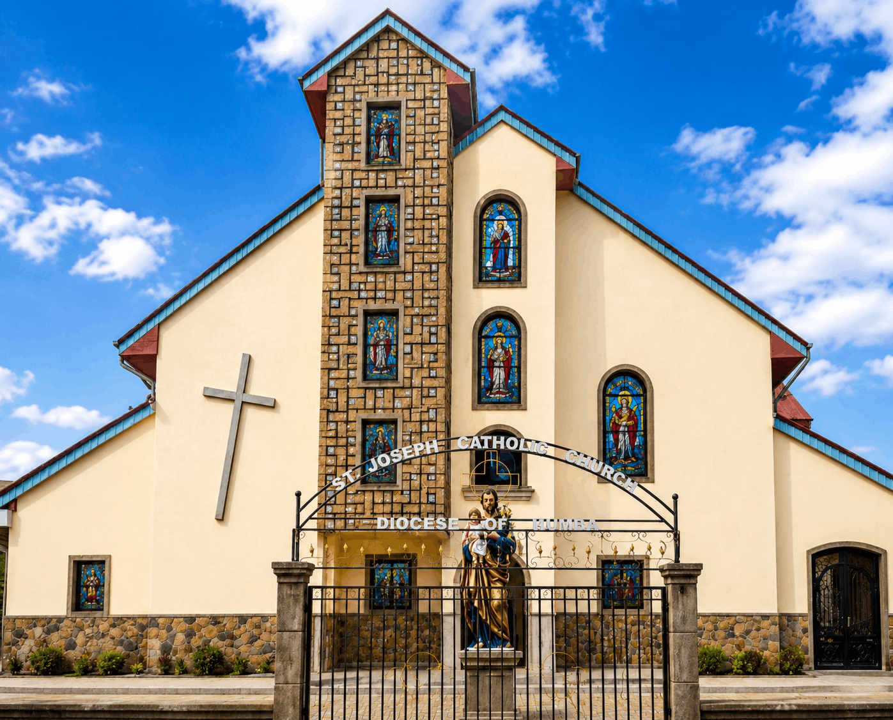

Welcome to St. Joseph Pastoral Zone
SJPZ is a vibrant Catholic community dedicated to worship, evangelization and service.
Join us every Sunday as we celebrate the Holy Mass and grow together in faith.
Mass Times
Sunday: 6:30 AM
Weekdays: 6:15 AM
Our Location
Buea Road
Diocese of Kumba
Contact
+237 654 302 680

Message from the Rector
Dear brothers and sisters in Christ, Welcome to St. Joseph Pastoral Zone. We are delighted that you are here. Whether you visiting for the first time or are a member of our parish family, we pray that you experience God's love, peace and joy. May the Lord continue to bless you and your family.
"Serve the Lord with gladness; come before Him with joyful songs." — Psalm 100:2
Our Mission
To proclaim the Gospel, celebrate the Sacraments, foster Christian fellowship, and serve humanity with love and compassion.
Prayer
We gather daily and weekly to worship God through the Holy Eucharist, prayer, and spiritual formation.
Service
We reach out to our community through charity, evangelization, and acts of kindness.
Mass Schedule
Sunday Mass
6:30 AM
Weekday Mass
6:15 AM
Upcoming Events
Sunday Holy Mass
Every Sunday - 6:30 AM
Weekday Mass
Everyday - 6:15 AM
Benediction
Sundays - 5:00 PM
Latest Announcements
Choir Practice
Every Friday at 5:30 PM in the church hall. All choir members are encouraged to attend.
Community Cleaning
Join us every first Saturday of the month as we clean the church compound.
Charity Outreach
Donations of food and clothing are welcome for our monthly outreach program.
2020
Mission Station Since
2024
Pastoral Zone Since
100%
Faith • Hope • Love